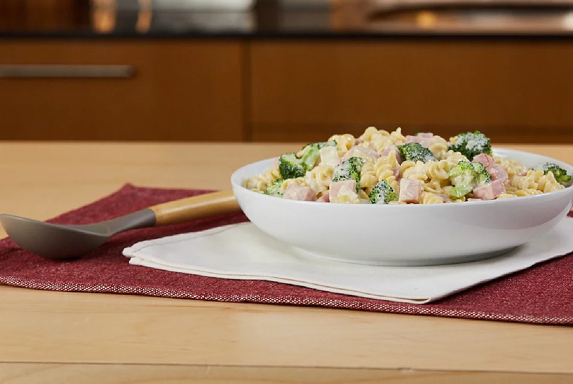

Creamy Ham

Broccoli florets and rotini pasta mixed with classic Alfredo sauce, ham, and Monterey Jack cheese makes a quick and easy weeknight family dinner.
Ingredients
- ¼ cup chopped onion
- 1 (16 ounce) package dried rotini pasta
- 1 (12 ounce) bag fresh broccoli florets
- 1 (16 ounce) jar RAGÚ® Classic Alfredo Sauce
Steps
- Heat a large pan of lightly salted water to boiling. Add onion and rotini pasta. Cook for 5 minutes. Meanwhile, cut up any large pieces of broccoli.
- Add fresh broccoli florets and cook an additional 5 minutes.
- In a medium saucepan, heat RAGÚ® Classic Alfredo sauce, Monterey Jack cheese and ham over medium-low heat until bubbling, stirring occasionally.
- Drain pasta mixture and return to pan. Stir in sauce mixture until well combined Serve warm.